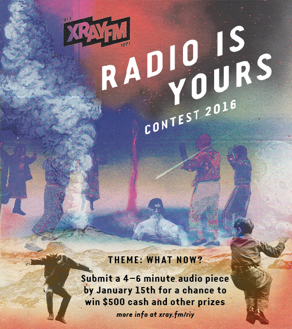
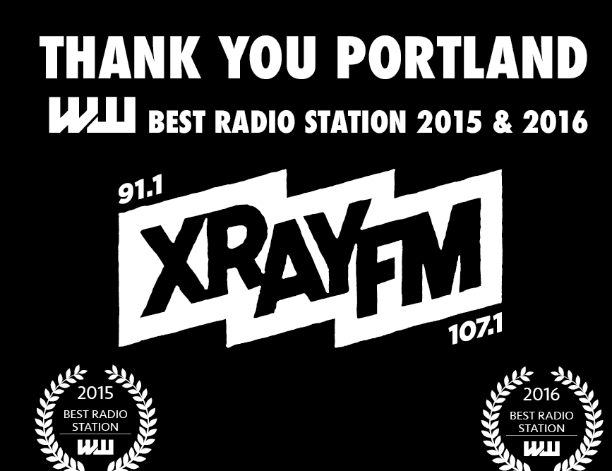

Projects
XRAY Featured Artist | Multichannel Marketing
Radio is Yours Contest | Project Management

Willamette Week Best of Portland | Community Enagement

Discogs + XRAY Sessions | Content Curation

Content strategy made simple.
I’m a Marketing Strategist and Account Manager with 5 years of experience working with community-engaged businesses, local nonprofits, and creative agencies to create an interactive brand experience between a client and their ideal audience. I’m a multitasker and avid adventurer who’s ready to hit the ground running in the world of brand strategy and design. Outside of the internet I’m usually hiking, drinking coffee, at a live show or googling remedies to save my house plants.
Contact me: jene.etheridge@gmail.com